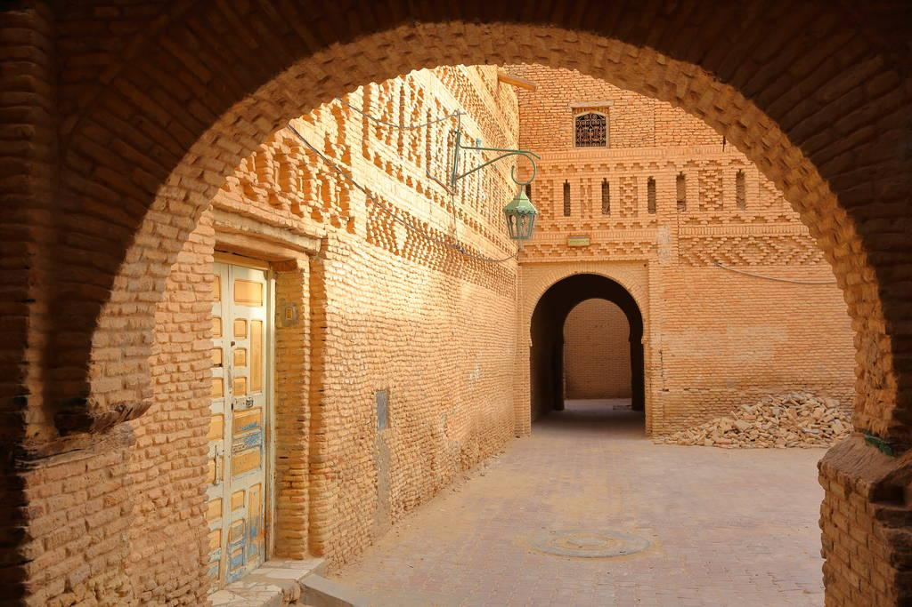

Tozeur est une magnifique ville située dans le sud-ouest de la Tunisie, connue pour ses grandes oasis, ses milliers de palmiers et son architecture traditionnelle en briques de terre.
Entourée par le désert du Sahara, elle offre des paysages exceptionnels qui attirent de nombreux touristes. La ville est célèbre pour sa vieille médina, ses dattes de qualité et ses magnifiques oasis.
Les visiteurs peuvent également découvrir les oasis de montagne, comme Chebika et Tamerza, ainsi que le célèbre Chott el-Jérid, un immense lac salé aux paysages fascinants.
Tozeur est une destination idéale pour découvrir la culture saharienne, les traditions tunisiennes et la beauté du désert.
Les fameux Destinations
La médina de Tozeur
La médina de Tozeur est l'un des lieux les plus emblématiques du sud tunisien. Elle est célèbre pour son architecture traditionnelle en briques de terre, formant de magnifiques motifs géométriques sur les façades des maisons.
Ses ruelles étroites, ses portes anciennes et son ambiance authentique témoignent de la richesse de son patrimoine historique et culturel.
En se promenant dans la médina, les visiteurs peuvent découvrir les traditions locales, l'artisanat et le mode de vie des habitants.
C'est une destination incontournable pour apprécier le charme, l'histoire et l'authenticité de Tozeur.

Le musée Dar Cheraït
Le musée Dar Cheraït, situé à Tozeur, est un lieu culturel qui met en valeur le patrimoine et les traditions tunisiennes.
Il présente des scènes de la vie quotidienne, des costumes traditionnels, des objets anciens et des éléments qui témoignent de la richesse de la culture tunisienne.
Grâce à ses expositions, les visiteurs peuvent découvrir les coutumes, l'histoire et le mode de vie des générations précédentes. Ce musée constitue une destination intéressante pour les amateurs d'histoire et de culture, tout en offrant une expérience enrichissante au cœur du sud tunisien.

L'oasis de Chebika
L'oasis de Chebika est l'un des plus beaux sites naturels du sud tunisien. Située près de Tozeur, au pied des montagnes de l'Atlas, elle est célèbre pour ses sources d'eau, ses petites cascades, ses palmiers et ses paysages rocheux spectaculaires.
Cette oasis offre un contraste magnifique entre la verdure de la nature et l'aridité du désert. Les visiteurs peuvent se promener sur ses sentiers, découvrir les vestiges de l'ancien village et admirer des panoramas exceptionnels.
Chebika est une destination idéale pour les amoureux de la nature, de la randonnée et de la photographie, ainsi qu'un symbole de la beauté naturelle du sud de la Tunisie.